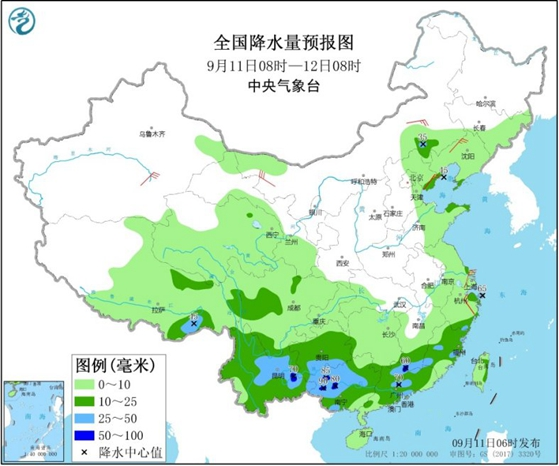
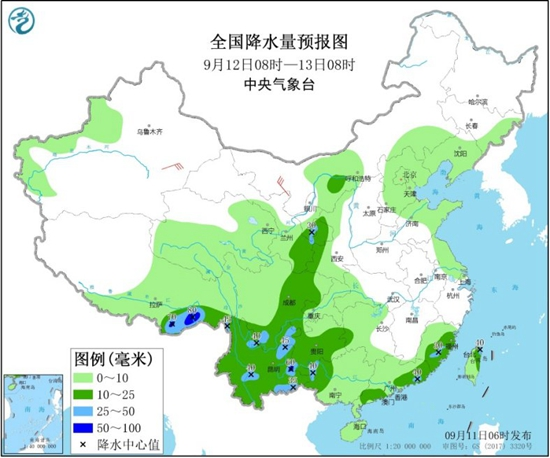

预计今起三天（9月11日至13日），南方阴雨天气频繁，特别是西南地区部分地区将有暴雨。随着阴雨天气的展开，西南地区、江南等地气温将有所下滑。在北方，频繁的冷空气也将推动季节的转换。
昨天，南方大部地区有雨水出现，强降雨分布零散，监测显示，四川南部、云南北部、贵州东部和南部、湖南南部和东北部、江西北部和西南部、湖北东部、安徽南部、江苏中南部、上海、浙江西部及广西西北部和南部等地出现分散性大到暴雨，局地大暴雨。
未来三天，南方阴雨天气仍将持续，特别是四川盆地、贵州等地。中央气象台预计，西南地区东部和南部、江南南部、华南等地有中到大雨，其中，云南东北部、广西中北部、广东中北部等地局地有暴雨。
具体来看，今天内蒙古东南部、河北东北部、江南东部和南部、西南地区南部、华南中北部、西藏东部、川西高原等地的部分地区有中到大雨，其中，广西中北部、云南东部、广东中北部等地局地有暴雨（50～90毫米）。

明天，西藏东南部、西南地区东部和南部、西北地区东部、内蒙古河套地区、华南南部等地的部分地区有中到大雨，局地暴雨（50～80毫米）。

南方阴雨不断西南地区局地暴雨 北方冷空气频繁
后天，西藏东南部、西北地区东北部、内蒙古河套地区、华北北部、西南地区大部、华南大部、江南东部、东北地区东北部等地的部分地区有中到大雨，局地有暴雨（50～80毫米）。
随着南方阴雨天气的展开，西南地区、江淮、江南等地气温也将有所下滑。特别是西南地区，13日前不少地方最高气温将降至20℃左右，或将创下今年立秋以来的新低。在江淮、江南等地，最高气温也将陆续降到30℃以下。
同时，冷空气正自西向东影响北方地区，后续还将有补充冷空气影响，西北地区多地气温将出现波动。省会级城市中，乌鲁木齐今后三天最高气温将维持在20℃左右，兰州、西安、银川在13日至14日也将迎来明显降温。
频繁的冷空气也将推动北方季节的转换，一般进入白露节气后，秋天范围会继续扩张，到白露节气结束时，夏秋分界线通常会推进到淮河沿线，华北中南部、黄淮一带通常也是在白露节气期间入秋。根据目前的情况，今年夏秋转换进程应该和常年接近。
气象专家提醒，近期西南地区、江南、华南等地多阴雨，局地伴有短时强降水，需防范次生灾害及对农业生产的不利影响。同时注意防范山洪地质灾害、中小河流洪水及城乡内涝灾害。